Personal grooming
Body care, skincare, styling, and personal presentation, with personal guidance and scheduled in-person sessions.
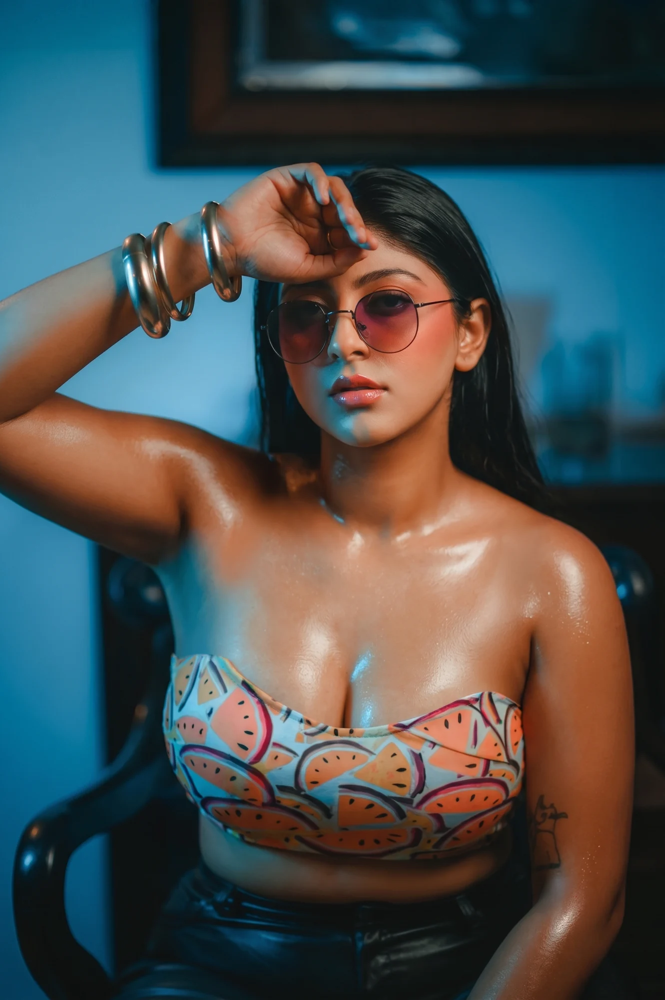
Grooming. Portfolios. Creator growth.
Scroll to explore ↓THE PERSON BEHIND THE LENS
I’ve worked as a professional photographer since 2012. In 2022, I expanded into model grooming and development coaching.
Today, I bring both sides together: helping creators build their personal presentation, feel more confident in front of the camera, and create a portfolio with a clear point of view.
Meet me on Instagram ↗THE CREATOR PROGRAM
Body care, skincare, styling, and personal presentation, with personal guidance and scheduled in-person sessions.
Editorial, street, western wear, casual, lounge, and swimwear shoots with cinematic lighting and thoughtful visual direction.
Refine your bio, shape a cohesive feed, and plan photography and content that express your creative identity.
Guidance on building brand content, approaching collaborators, growing engagement, and pursuing paid opportunities.
01 / THE TRANSFORMATION
Drag to explore the before and after.
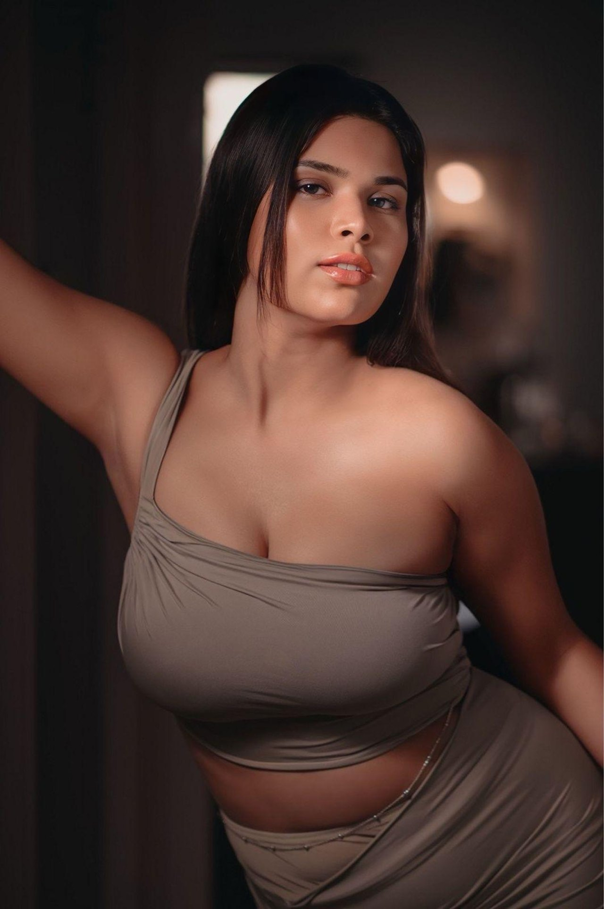
AFTER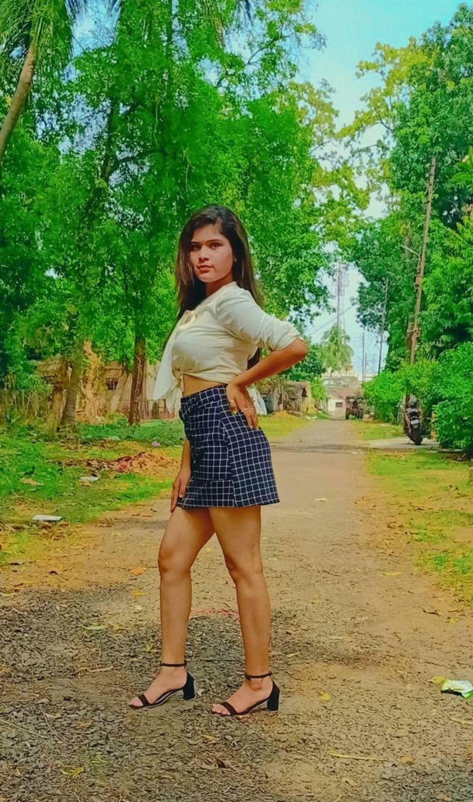
BEFORE02 / THE PROCESS
A routine shaped around you.
Discuss your goals and build a personal grooming plan, step by step.
Explore body care, skincare, hygiene, intimate hygiene, and ongoing maintenance based on your program.
Plan two full-body grooming sessions each month, according to your availability and at a mutually agreed location.
Continue your grooming practices between sessions with personal guidance.
03 / OUR CREATORS
THE LOOKBOOK
Explore the looks. Tap a frame for the full picture.
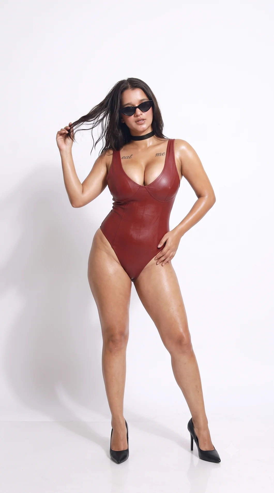
01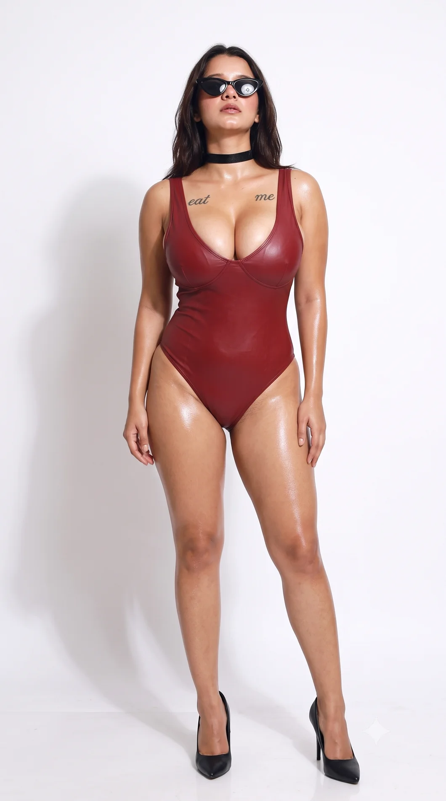
02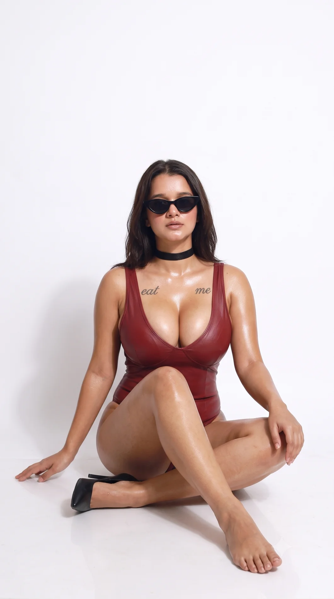
03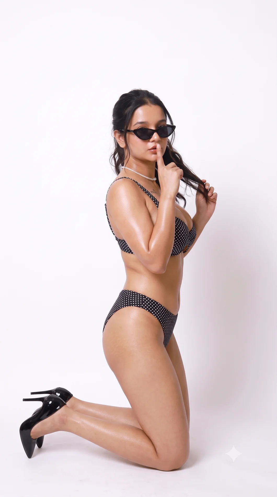
04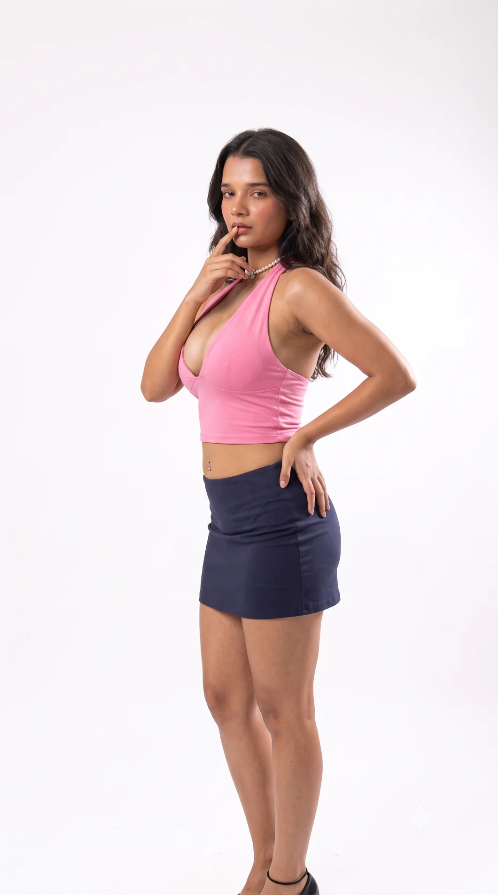
05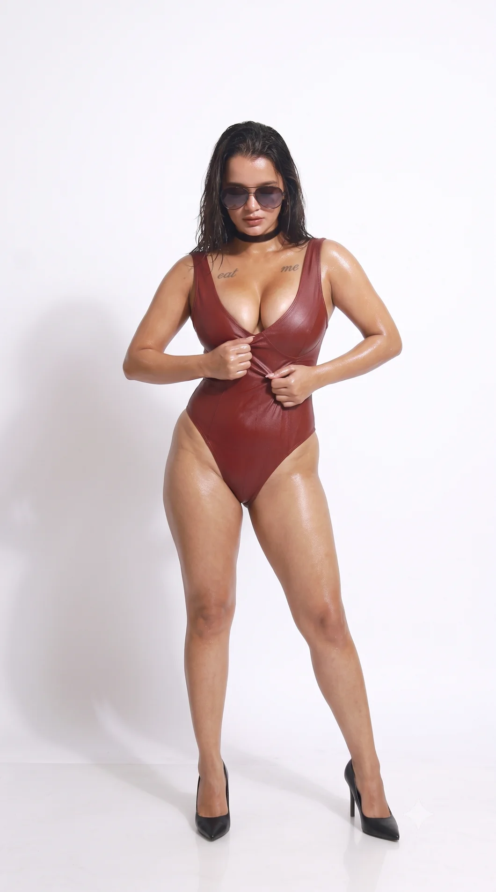
06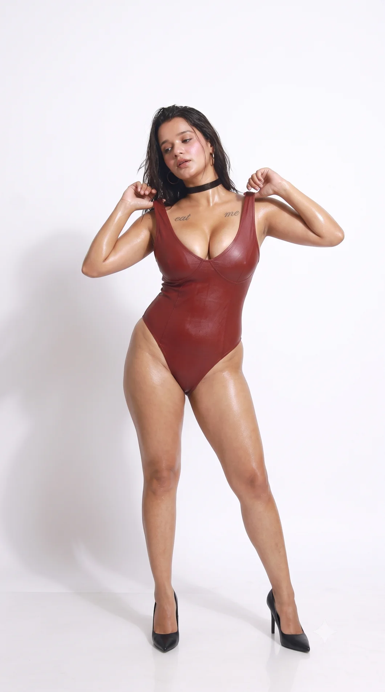
07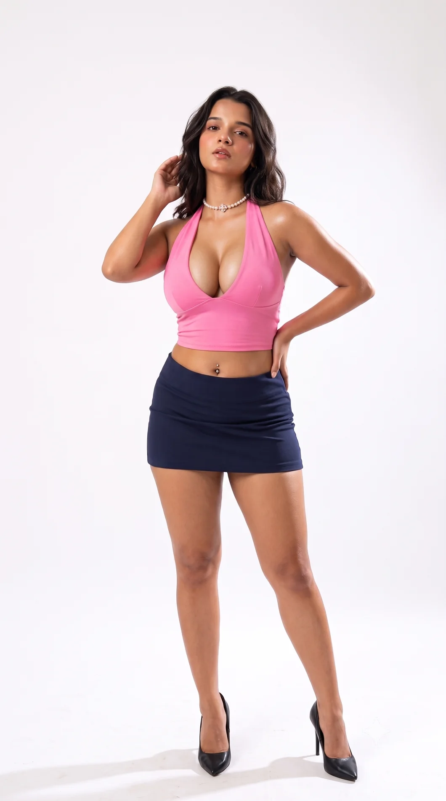
08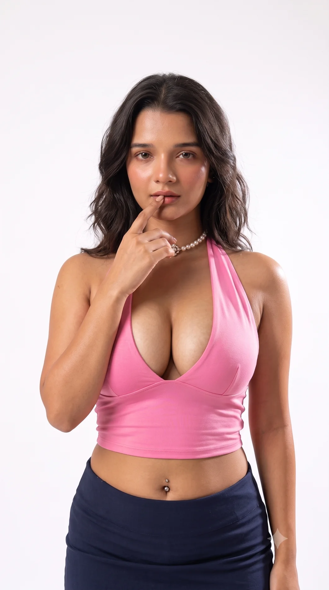
09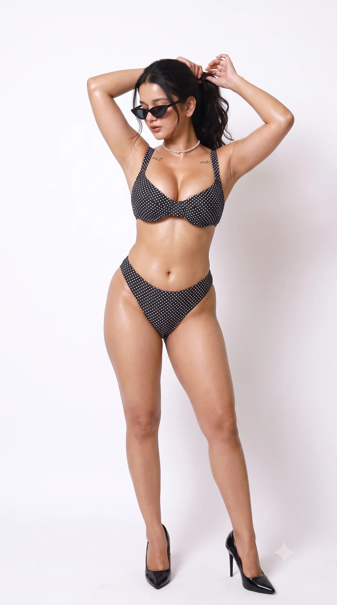
10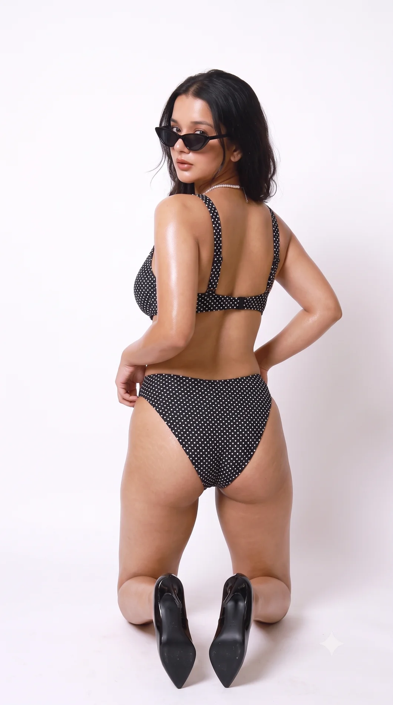
11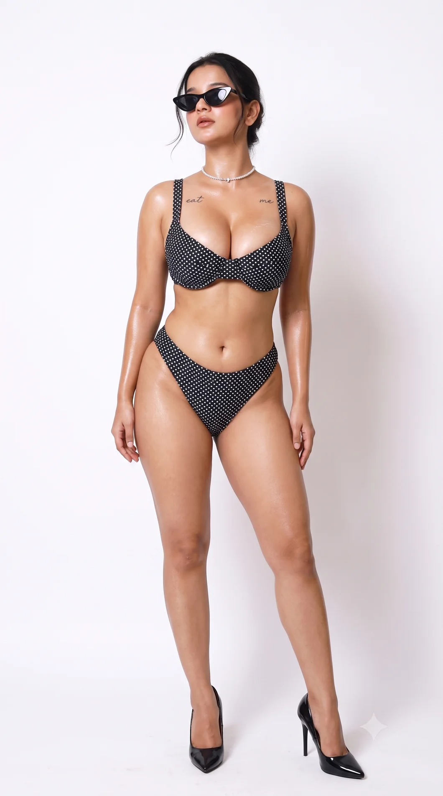
12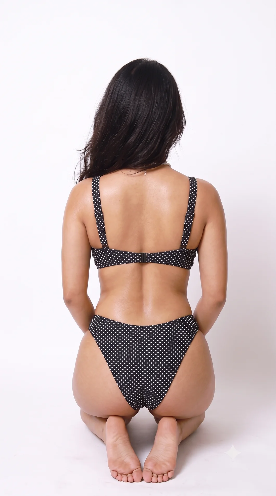
1313 photographs
CREATOR EXPERIENCES
Hear more about the experience.
Ask for creator reviews and learn what the program could look like for you.Ask for reviews ↗BRANDS & COLLABORATIONS
For body grooming, photography, creator contents, and brand collaboration enquiries, connect with us on Instagram
Discuss a collaboration ↗OUR ASSOCIATIONS
06 / THE GALLERY
Business details, contacts, costs, and commercial terms remain confidential and are shared only with prior consent. Relevant plans, methods, products, and timelines are shared to support your development. Previous models’ identities and personal details remain private; undisclosed brand associations are shared only when needed to address conflicts of interest.
the curvy indians - DaCandidAffairsMgmt
the curvy indians - DaCandidAffairsMgmt · Photography ↗
{kind=link}
{kind=link}
{kind=link}
{kind=link}
{kind=link}
{kind=link}
{kind=link}
{kind=link}
{kind=link}
{kind=link}
{kind=link}
{kind=link}
{kind=link}
{kind=link}
{kind=link}
{kind=link}
{kind=link}
{kind=link}
{kind=link}
{kind=link}
{kind=link}
{kind=link}
{kind=link}
{kind=link}
{kind=link}
{kind=link}
{kind=link}
{kind=link}